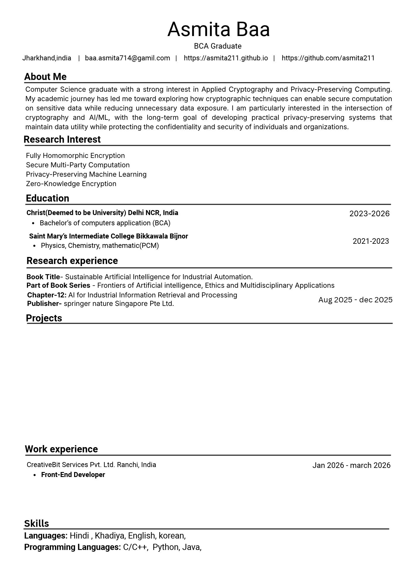

About Me
I am a Computer Applications graduate with a strong interest in Applied Cryptography and Privacy-Preserving Computing. My research interests focus on developing secure computation techniques that enable sensitive data to be processed while minimizing unnecessary exposure of the underlying information.
I am particularly interested in Homomorphic Encryption, Secure Multi-Party Computation, and Zero-Knowledge Proofs, and their application to Privacy-Preserving Artificial Intelligence and Machine Learning. Through my graduate studies, I aim to develop deeper expertise in these areas and explore practical solutions for secure AI systems.
My long-term goal is to contribute as a researcher and engineer to secure and privacy-preserving computing, particularly for sensitive applications in healthcare, finance, education, and cloud-based AI services.
Research Focus
Publication
Book Title: Sustainable Artificial Intelligence for Industrial Automation
Book Series: Frontiers of Artificial Intelligence, Ethics and Multidisciplinary Applications
Chapter 12: AI for Industrial Information Retrieval and Processing
Publisher: Springer Nature Singapore Pte. Ltd.
Publication Status: Accepted for Publication
Expected Publication: February 2027
Presentation
CV

